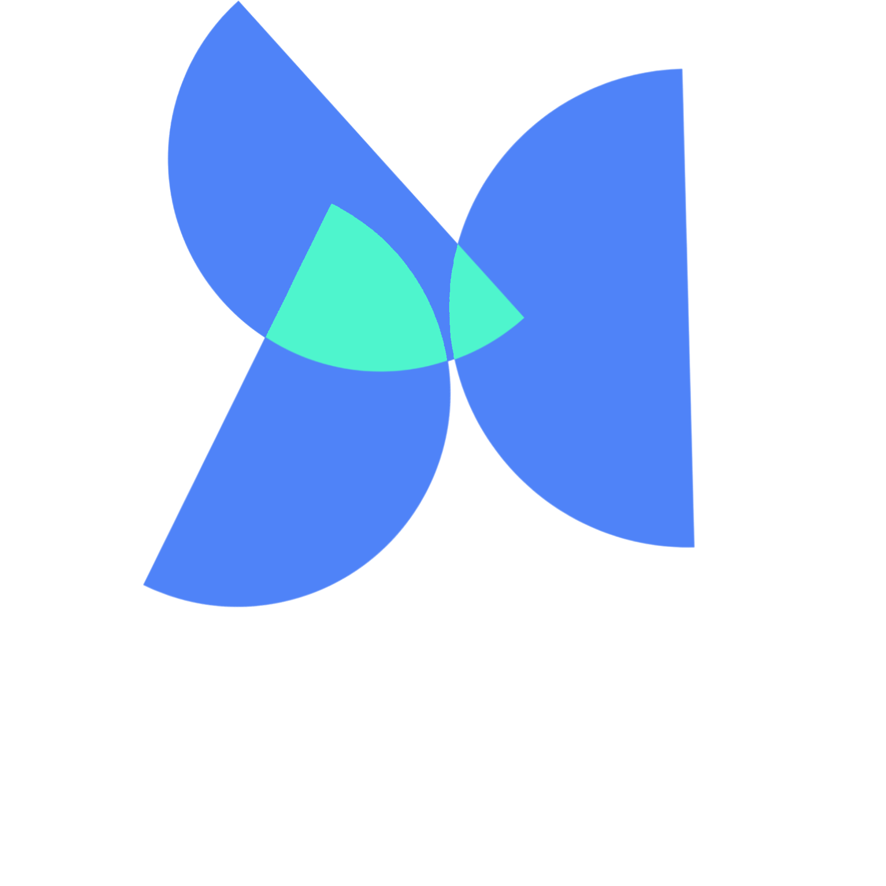

BEM VINDOS AO:
MANDROID 5.0
AYLLY SECRETÁRIA VIRTUAL
Tem como objetivo unir automações em um só software para que assim seja controlados por somente uma interface intuitiva e objetiva que pode ser acessado de qualquer lugar, onde estiver, somente requerindo conexão a internet.